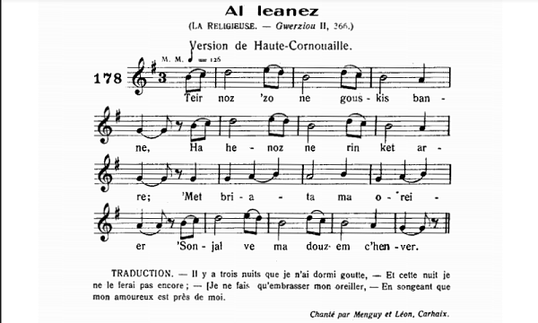
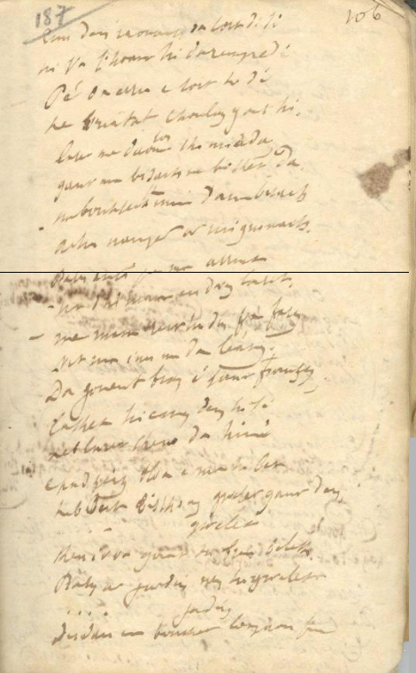
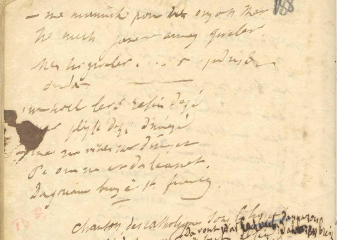

Ar c'hoant mont da leanez
La vocation de religieuse
Vocation to be nun
Chant tiré du 2ème Carnet de collecte de La Villemarqué (p. 186 - 188.
Mélodie
Arrangement Christian Souchon (c) 2020
|
A propos de la mélodie Une fois déchiffrée (une tâche pénible, ô combien!) on reconnait dans cette "son" une "gwerz" publiée en 1874 par François-Marie Luzel dans le 2ème tome de ses "Gwerziou Breiz-Izel", p. 366 - 371, sous le titre de "Al leanes / La religieuse" Il l'avait collectée à Plouëc-du-Trieux, à 20 km au nord de Guingamp. Une mélodie accompagnant ce chant a été notée (avant 1913) par Maurice Duhamel à Carhaix, telle qu'elle était interprétée par les chanteurs de "kan ha diskan", Yves Menguy et Guillaume Léon. Elle figure dans ses "Musiques bretonnes", sous le même titre, p. 89, chant n° 178. A propos du texte Le site tob.kan.bzh consacré à la classification Malrieu donne les indications suivantes, pour le chant trégorrois collecté par Luzel: Référence Malrieu : M-00148 Titre critique breton : Ar choant mont da leanez Titre critique français : La vocation de religieuse Résumé : Marie navait que treize ans quand elle eut un chapelet et songea à prier la Vierge à la chapelle de Vur-Wenn. Un clerc la remarque, la raccompagne et lui propose une bague. « Je ne prendrai de bague que de la part de Dieu, je veux être religieuse. Voici ma main pour vos adieux ». Marie disait à sa mère en rentrant : « Si vous voulez me donner mon bien jirai au couvent ». « Jai fait assez de saintes gens. Trois de vos frères sont prêtres à Saint-Brieuc, votre sur aînée est religieuse. Marie, il faudra vous marier ». La Vierge apparaît, lui promet son aide et Marie reste sept ans invisible de tous. Après ces sept ans, son frère dom Jean la voit mais sa mère veut toujours la marier. « Comment voulez-vous marier une jeune fille qui a sur la tête la couronne ? ». Cruel le cur qui neût pleuré en voyant la Vierge Marie embrasser Marie. Elle est allée aux Joies. Puissions-nous y aller tous. Thèmes : Résumés de vie, destinées, vies de personnages historiques. Le site ne mentionne pas, outre la présente version accessible au public depuis novembre 2018 seulement, quatre autres occurrences de ce chant: |
About the tune Once deciphered (a really painful chore!) we recognize in this "son" a "gwerz" published in 1874 by François-Marie Luzel in the 2nd volume of his "Gwerziou Breiz-Izel", p. 366 - 371, under the title "Al leanes / The nun". He had collected it at Plouëc-du-Trieux, 20 km north of Guingamp. A melody accompanying this song was noted (before 1913) by Maurice Duhamel in Carhaix, from the singing of the "kan ha diskan" duettists,Yves Menguy and Guillaume Léon. It is printed in Duhamel's collection "Breton Music", under the same title, p. 89, song n ° 178. About the lyrics The tob.kan.bzh site devoted to the Malrieu song classification gives the following indications, for the Tréguier dialect song collected by Luzel: Malrieu Index: M-00148 Breton critical title: "Ar choant mont da leanez" English critical title: The vocation to be nun Synopsis: Mary was only thirteen when she was presented with a rosary and thought of praying to the Virgin in the chapel of Vur-Wenn. A cleric notices her, walks her home and offers her a ring. - "I will only take a ring from God, I want to be a nun. Here is my hand: let's say farewells. Marie said to her mother: - "If wish you would give me my share of heirloom, I will go to the convent". - "There are enough holy people I gave birth to: Three of your brothers are priests in Saint-Brieuc, your elder sister is a nun. Marie, you must get married . The Holy Virgin appeared, and helped her to remain hidden away from everybody's eyes for 7 years. Then her brother could catch a glimpse of her. Her mother still wanted to marry her. - "Do you want to marry a girl who wears the crown of sanctity?" Cruel the heart that would not have wept on seeing the Virgin Mary embrace the nun Mary! She has gone to Joys evermore. So may we, all of us! Themes: Summed up life stories, destinies, lives of historical figures. The site does not mention, apart from this version accessible to the public since November 2018, four other occurrences of this song: |
|
MANUSCRIT p. 186  p. 187  p. 188  |
p.186 SON 1. Kloarek Al Loyer a zo lakaet [1] Lakaet er priz, priz e Gwened. 2. - Teir noz zo ha n'em-eus kousket Hag henoz ne rin kennebeut O vriatat ma c'holoenn ' Soñj oa ma dousig em c'heñver. - [2] 3. Petra [nevez] a zo douget? Weler henoz karour merc'hed, Weler henoz karer merc'hed Hag unan prestik da vont kloarek. 4. Er chapel a oa tost d'e di Chapel ar Vouli-Wenn a oa hi [3] [Hag hi 'soñjal en he c'halon] Aet da laret hi orezon 6. - Vit ar wech n'ho refuzin ket [4] Vit ar wech all c'hwi na deut ket. - 5. Un den yaouank a Landili [5] En-doa c'hoant hi daremprediñ. Pa oa erruet tost d' e di, He briatat c'houlenn ganti. 7. - Lakait hon daou kimiadañ Gant ma bizaj na bokit da! Na bokfec'h mui d'am bizaj Achu amzer ar mignonaj. - 8. Barzh an ti pa'z eo arruet Na d'hi mamm he-deus hi laret: - Ma manm, roit-c'hwi din va ferzh Vit sur, 'z in-me da leanez. - 9. D'ar Gouent bras a Zant Fransez [6] Lakaet hi koñje d'eus he re, Lakaet hi koñje d'eus he re, Laras"keno" da bep hini... 10. E-pad seizh vloaz he-doa hi bet. Hep bout biskoazh gwelet gant den Hep bout biskoazh gwelet gant den. Ken he-voa gant he breur beleg. 11. Ken he-voa gant he breur beleg. Barzh ur jardin 'n-deus hi gwelet.. 'N-deus hi gwelet barzh ur jardin, Dindan ur bouked louzoù fin. 12. - Ma mammig paour, na ouzoc'h ket? Ho merc'h Janed am-eus gwelet. 'Meus hi gwelet barzh ur jardin Dindan ur bouked louzoù fin. 13. - Ma holl leve rofen dezhi Mar blijfe dezhi dimeziñ - Ne vin da viken (ket) dimezet Pa oan me aet da leanez Degouezh bras oa e gwir frankiz (?). - = KLT gant Christian Souchon (c) 2020 |
p.186 CHANSON 1. Clerc Le Loyer [nous] te mettr[ons] En prison à Vannes, en prison!... 2. - Trois nuits que je n'ai pas dormi Pas plus [d'ailleurs] que celle-ci Où j'embrasse mon couvre-pieds T'imaginant à mon côté. - 3. Dites-moi, que s'est-il passé? On voit ce soir l'ami des dames, [Lequel sera sans état d'âme] Bientôt un clerc, se promener. 4. A l'église près de chez lui, A la chapelle du Bourg-Blanc. [C'est là qu'elle s'était promis] D'aller prier [dévotement]. 6. - Pour cette fois, je vous l'accorde. Mais c'est bien la dernière fois. 5. Le jeune homme de Lannilis Qui désirait fort l'entreprendre Entre ses bras la voulut prendre Quand ils furent près de chez lui, 7. - Non, séparons-nous à présent, Un baiser serait inutile! [Ce serait même un jeu futile] Lorsque l'amitié fit son temps. - 8. Elle rentre chez ses parents. Dit à sa mère [sans ambages]: - Donnez-moi ma part d'héritage! C'est décidé, j'entre au couvent. - 9. Au grand couvent des Franciscaines Prenant congé de ses parents, [Animée d'une joie sereine] A fait ses adieux à chacun. 10. Sept longues années se passèrent Sans que personne ne l'ait vue. Et le seul qui l'eût aperçue, C'est un prêtre. C'était son frère. 11. C'est près d'un bouquet de lavande Qu'il l'aperçut dans un jardin [De lavande ou de romarin] Il la vit. [Sa joie était grande]. 12. - Chère mère, tenez-vous bien! J'ai vu votre fille Jeannette. Oui, je l'ai vue [votre fillette] Parmi les [fleurs] dans un jardin. 13. - Je lui cède toutes mes rentes S'il lui plaisait de convoler - Je ne me marierai jamais: Quand on devient soeur [pénitente], On l'a librement décidé. - = Traduction Christian Souchon (c) 2020 |
p.186 A SONG 1. Clerk Le-Loyer was put Put in prison, in prison in Vannes. 2. - Three nights already I didn't slept And tonight I won't anymore And I keep hugging my pillow, Pretending, my dear, it were you. - 3. Say, what's all the stir about? They saw the girl lover tonight Aye, they saw him roam around Though he will be a cleric soon. 4. Twas in the chapel near his house, In the chapel of Bourc'h-Wenn, That she wished deep in her heart She would go and say her prayers 6. - This time I'm not repelling you. Still there won't be another time. 5. The young man came from Lannilis His dearest wish was to woo her. And when they arrived near his home, He asked to take her in his arms. 7. - We must part from one another, And do not attempt to kiss me! You shall not attempt to kiss me! The time for friendship is over. - 8. She went home back to her parents. And she told her mother [bluntly]: - Give me now my share of heirloom I've decided to be a nun. - 9. Near the great Franciscan convent She took leave of her parents, She took leave of her parents, And bade farewell to everyone. 10. Now seven long years have passed Without anyone seeing her. Yet there was someone who saw her, A priest who was her brother. 11. A priest who was her brother. And he saw her in a garden And he saw her in a garden Twas near a bunch of lavender 12. - Dear mother, you will be surprised: Your daughter Jeannette I have seen. I did see her in a garden On a bed of flowers and fine herbs. 13. - I would give her all my income If she would consent to marry - I will never get married: Twas, when I became a nun, A freely thought-out decision - = |
NOTES
|
[1] Clerc Le Loyer: Le chant du manuscrit commence distinctement par les mots "Kloarek Al Loyer" . On a déjà rencontré ce personnage dans le chant homonyme du carnet 1, p. 67- 69, dont l'intrigue est très différente. Le Loyer n'est pas un joli-coeur qui papillonne comme semble le croire le chanteur qui est peut-être à l'origine de cette confusion (cf. str. 3: le soupirant est traité de "karour/karer merc'hed", d'amateur de femmes). [2] J'embrasse mon couvre-lit<: Luzel note à propos de cette strophe qui introduit sa version du chant, si ce n'est que "oreiller" remplace le mot "goloenn" (housse): "Ce premier couplet me semble avoir peu de rapport avec le reste de la pièce. Je croirais assez volontiers que cest une interpolation." Le fait que La Villemarqué rencontre cette strophe à peu près à la même place dans une version différente, montre au contraire que cette strophe fait bien partie de l'intrigue. La sensualité qui s'en dégage est assez inhabituelle. Le Colliou de Plouguerneau qui, dans la version de Penguern, revendique la paternité de cette gwerz avait-il lu des romans "licencieux"? En tout cas, ce trait, qui caractérise si bien le soupirant, tranche magistralement avec la suite du récit. [3] Chapelle de Bouli-Wenn: on lit assez distinctement "ar vouli Wen" où "wen" est certainement le mot "gwenn", blanc, après un mot féminin muté après l'article qui peut être "Mouli" ou "Bouli". On peut penser à "Moulin blanc" qui serait toutefois "ar Vilin wenn" en KLT normalisé. Ce nom avait aussi intrigué Luzel qui note : " Vur-Wenn est peut-être Bourg-Blanc [breton "Bourc'h-wenn", au nord de Brest]. Cest le nom donné à la famille et au manoir de ce nom en Plourivo [à 5 km au sud de Paimpol]. Il y a un Bourg-Blanc également en Finistère [?]". [4] Strophe 6: Cette strophe semble avoir été intervertie avec la suivante par le chanteur lui-même. La notation manuscrite ne comporte pas de ratures. [5] Un jeune homme de Landili: On attendrait plutôt "Le jeune homme", se rapportant au clerc dont il a déjà été question. Pourtant, on lit distinctement "Eun den iaouang". En revanche, pour le nom de la localité, il s'agit certainement de Lannilis, proche de Plouguerneau d'où est originaire l'auteur de la gwerz, selon la version de Penguern. [6] Le grand-couvent de Saint-François: Le quartier des Capucins de Brest (Ar Gapusined) tient son nom d'un couvent de moines capucins construit en 1695 par Vauban. Les capucins sont rattachés à l'ordre des Franciscains qui fournissent les aumôniers de la Marine. Lordre des Pauvres Dames, ou lordre des Clarisses, ou aussi les Cordelières, a été créé en 1212 par Claire d'Assise, à la demande de François d'Assise. Il existe 2 couvents de Clarisses en Bretagne, à Rennes et à Nantes. D'autres détails concernant les ordres monastiques qui se réclament de Saint François d'Assise sont donnés à propos du chant Le moine Guillaume Le Gall, dont le sujet est la vocation religieuse d'un jeune capucin. Le film en noir et blanc "Ida" du Polonais Pawel Pawlikowski , sorti en février 2014, qui nous invite à suivre la quête d'une novice et de sa tante, ancien procureur du temps du socialisme, mène une réflexion sur la foi qui fait penser à l'intrigue de la présente gwerz dont l'héroïne est une certaine Jeannette (Marie dans la version Luzel). |
[1] Clerc Le Loyer : The song in the manuscript begins distinctly with the words "Kloarek Al Loyer". We have already met this character in the homonymous song of notebook 1, p. 67-69, which has a clearly different plot. Le Loyer is not a "farfalone amoroso" as supposed by the singer who is perhaps the one who made things confusing (cf. str. 3 where the suitor is treated as "karour / karer merc'hed" , admirer of women). [2] I hug my pillow <: Luzel notes about this stanza which introduces his version of the song, - but "pillow" replaces the word "goloenn" (blanket ) "I think this first verse has little to do with the rest of the piece. I would rather think it was an interpolation." The fact that La Villemarqué's version does have this stanza in roughly the same place shows, on the contrary, that it is in fact part of the plot. The sensuality that emanates from it is quite unusual in gwerzioù. Had the named Colliou of Plouguerneau who, in Penguern's version, claims the authorship of this gwerz, read "licentious" novels? In any case, this trait, which characterizes the suitor so well, contrasts brilliantly with the rest of the story. [3] The Bouli-Wenn Chapel: we read quite distinctly "ar VouliWen" where "wen" is certainly the word "gwenn", white, as it often appears after a feminine word, while the rest of the word could be "Mouli" or "Bouli", mutated after the article 'ar". One can think of "Moulin-Blanc" which would however be "ar Vilin wenn" in standardized KLT. This name had also intrigued Luzel who notes: " Vur-Wenn is perhaps Bourg-Blanc [Breton " Bourc'h-Wenn ", north of Brest]. This very name is given to a family and a manor not far from Plourivo [5 km south of Paimpol]. There is another Bourg-Blanc in Finistère [?] ". [4] Stanza 6 : This stanza seems to have been swapped with the next one by the singer himself. The handwritten notation does not contain erasures. [5] "A young man from Landili" : We had rather expected "The young man", referring to the cleric who has already been mentioned. However, we distinctly read "Eun den iaouang". On the other hand, the name of the locality, should certainly be Lannilis , close to Plouguerneau where the author of the gwerz is from, according to Penguern's version. [6] The great convent of Saint-François : The "Capuchin district" of Brest town (Ar Gapusined) takes its name from a convent of Capuchin monks built in 1695 by Vauban. The Capuchins are attached to the order of the Franciscans who used to provide chaplains for the Navy. The "Order of the Poor Ladies", or the "Order of Poor Clares", or also the "Cordelières", was created in 1212 by Clare of Assisi, at the request of Francis of Assisi. There are 2 convents of Poor Clares in Brittany, in Rennes and Nantes. Other details concerning the monastic orders which claim to have been founded by Saint Francis of Assisi are given in connection with the song Friar Guillaume Le Gall , whose subject is the religious vocation of a young Capuchin. The black and white film "Ida" by Pole Pawel Pawlikowski, released in February 2014, gives us insight into the spiritual quest of a novice nun and her aunt, who was a former prosecutor in the days of socialist Poland. It is a reflection on faith, at some extent akin to the plot of the present gwerz whose heroine is a named Jeannette (called "Marie" in the Luzel version). |
Image tirée du film "Ida"